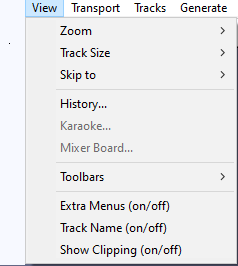
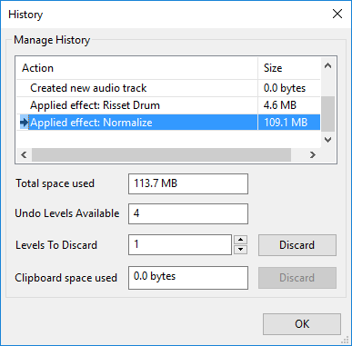
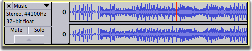

View Menu
- 
- These views can be changed individually for each track using the Audio Track Dropdown Menu
- Also you can change the default View Mode for all tracks in Tracks Preferences.
Zoom
The Zoom submenu has commands that enable you to control the amount of audio, longer or shorter periods of time, that is visible on your screen.
Track Size
The Track Size submenu contains commands that help you to fit your project to the screen horizontally and vertically.
Skip To
The Skip to submenu has commands that enable you to readily skip the cursor position to the beginning or end of your current selection.
History...
Brings up the History window which can then be left open while using Audacity normally. History lists all undoable actions performed in the current project, including importing. The right-hand column shows the amount of hard disk space each operation used and the total space used is shown in the first (uneditable) box beneath the list. In the project shown in the image below we normalized both the recorded track and the Risset Drum track, so Normalize took a little more space than that taken by the recording.
- 
If you discard Undo levels you can reclaim the disk space used by the project. To save the most space (removing ability to undo or redo any past edits), select the bottom Action in the list using the mouse or keyboard Up or Down arrow, increase "Levels to Discard" to the highest possible number then click "Discard".
You can also easily jump back and forth between editing steps by selecting the entries in the window. This can be quicker than choosing Undo and Redo multiple times from the Edit Menu.
See Undo, Redo and History for details on using the Undo History window.
Karaoke...
Karaoke... shows a bouncing ball that follows text as audio plays. The Karaoke... command is enabled whenever you have at least one label track. If you have multiple label tracks, it uses only the first one.
For more details see the Karaoke page.
Mixer Board...
Mixer Board... is an alternative view to the audio tracks in the main tracks window, and is analogous to a hardware mixer board. Each audio track is displayed in a Track Strip. Each Track Strip has its own pair of meters, gain slider, pan slider, and mute/solo buttons, echoing that track's controls in its Track Control Panel. The Mixer Board... command is enabled whenever there's an audio track - it can even be brought up during playback.
For more details see the Mixer Board page.
Extra Menus (on/off)
Shows the extra menu with many extra less frequently used commands. This menu appears just before the help menu.
Show Clipping
Click this menu item to turn display of clipped samples on and off - a check mark in the item indicates that display is turned on. If turned on (the default is off), individual or multiple clipped samples display as a red vertical line when in one of the waveform views. A sample is displayed as clipped if it touches or exceeds 0 dB and so touches or exceeds the volume envelope defined by +1.0 to - 1.0 on the vertical scale to left of the waveform.
A run of four or more consecutive clipped samples will also trigger the red clipping indicator in Meter Toolbar. A solid block of red in the waveform will almost certainly indicate multiple or extended runs of lost audio information above 0 dB, resulting in severe distortion. Avoid clipped samples where possible, for example by setting the recording level correctly. You may turn "Show Clipping" off if it behaves sluggishly on slower machines.
- 
Enter / Exit Full Screen (Mac only)
This menu item only appears on Mac OS X Lion and above. Enter Full Screen enters full screen state, occupying the entire display and hiding the Audacity menu bar and window buttons and the Dock. This is the same as clicking the green window button top left of the Audacity title bar. To leave Full Screen, hover your mouse at the top of the monitor to show the menu bar and window buttons then access View > Exit Full Screen or click the green window button.
The Mac keyboard shortcut Ctrl + ⌘ + F to toggle full screen does not work in Audacity and so does not appear alongside the Enter / Exit Full Screen menu items. Separate "App Shortcuts" for "Enter Full Screen" and "Exit Full Screen" can be added for Audacity in the Mac Keyboard Preferences, but it is probably easier to use Audacity's own shortcut COMMAND + / for "Full screen on/off" which performs the same full screen function.
| "Full screen on/off" is not interchangeable with the menu item or full screen button. Thus the Audacity shortcut cannot exit full screen entered by other methods, and the other methods cannot exit full screen entered by using the Audacity shortcut. |